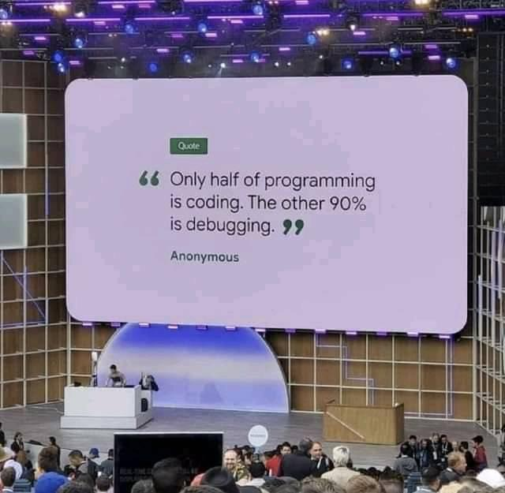

Hello my name is Landon Harness and I take computer science at Plymouth High school. I
am from Indiana and have lived here my whole life. I take place in Vex Robotics and honestly
if I would put in some work, I could do better than the Plymouth middle school team.
The cow is my spirit animal. Cows are lazy, have great memory, and they form great friendships.
Cows also have an amazing nose that can smell odors up to 6 miles away! Since cows are a big
animal, they can consume up to 40 pounds of food a day. Plus, I think cows are cool because
in 1850 almost every family owned a cow.
